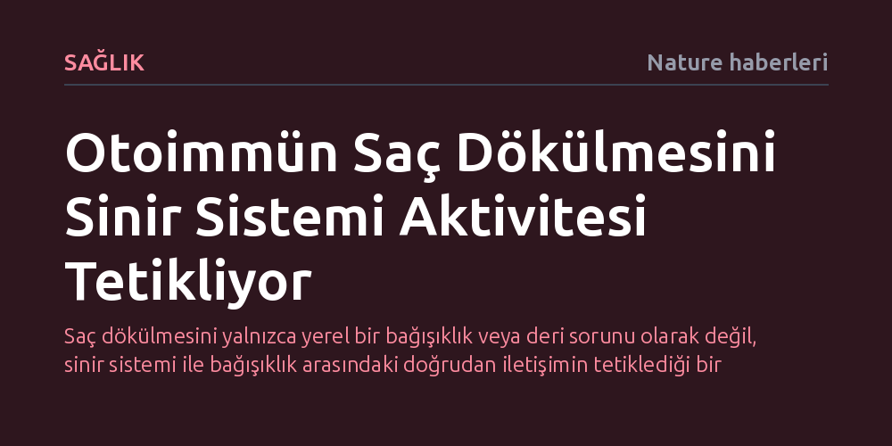

SAGLIK · Nature haberleri · 2026-10-27
Fareler üzerinde yapılan yeni bir araştırma, otoimmün saç dökülmesini doğrudan sinir sistemi aktivitesinin tetiklediğini ortaya koydu. Bulgular, bağışıklık hücrelerinin saç köklerine saldırmasında sinirsel uyarıların kilit bir başlatıcı rol oynadığını gösteriyor.
Saç dökülmesini yalnızca yerel bir bağışıklık veya deri sorunu olarak değil, sinir sistemi ile bağışıklık arasındaki doğrudan iletişimin tetiklediği bir süreç olarak görmemizi sağlar.

Saç, insanlık tarihi boyunca yalnızca biyolojik bir örtü değil, bireyin kendini ifade etme biçimi, özgürlük simgesi ve kişisel kimliğinin ayrılmaz bir parçası olmuştur. Nitekim popüler kültürde de sıklıkla vurgulandığı üzere saçlar kişinin benlik algısını doğrudan şekillendirir. Buna karşılık, tıp literatüründe alopesi olarak adlandırılan saç kaybı ve kellik, birey üzerinde sadece psikolojik bir sarsıntı yaratmakla kalmaz; biyolojik düzeyde de bedenin kendi varlığına karşı giriştiği somut bir saldırıya dönüşür.
Bu yıkıcı sürecin merkezinde otoimmünite mekanizması yer alır. Normal şartlarda vücudu dış tehditlere, virüslere ve bakterilere karşı korumakla yükümlü olan bağışıklık hücreleri, kendi dokularını yabancı birer istilacı gibi algılamaya başlar. Otoimmün saç dökülmesinde de savunma sistemi yönünü şaşırarak saç köklerini hedef alır, kıl foliküllerinde doku hasarına yol açar ve nihayetinde saç üretimini durdurur. Yıllardır bağışıklık sisteminin bu saldırganlığı neden ve nasıl başlattığı sorusu biyolojinin en karmaşık bilmecelerinden biri olmayı sürdürmüştür.
Bugüne dek otoimmün saç dökülmesine ilişkin araştırmaların ezici çoğunluğu, doğrudan kıl folikülünü çevreleyen bağışıklık hücrelerine ve bu hücrelerin salgıladığı iltihap moleküllerine odaklanmıştı. Ancak Nature dergisinde yayımlanan ve Cui ile çalışma arkadaşlarının fareler üzerinde yürüttüğü yeni araştırma, tablonun eksik kalan en kritik parçasını aydınlatıyor: Saç köklerine yönelik bu otoimmün saldırıyı asıl başlatan unsurun sinir sistemi aktivitesi olduğunu ortaya koyuyor.
Araştırmacıların elde ettiği laboratuvar bulguları, derideki sinir liflerinin salt hissetme işlevi görmediğini, bağışıklık hücrelerinin hareketliliğini ve saldırganlığını doğrudan yönlendiren sinyaller ürettiğini gösteriyor. Sinir hücrelerinin yaydığı elektriksel ve kimyasal uyarılar, sakin haldeki bağışıklık hücrelerini alarma geçirerek saç köklerine yönlendiriyor. Böylece sinir sistemi ile bağışıklık sistemi arasındaki bu doğrudan iletişim köprüsü, kıl foliküllerini hedef alan otoimmün hasarın fitilini ateşleyen birincil mekanizma olarak öne çıkıyor.
Bu keşif, otoimmün saç dökülmesine yönelik klinik yaklaşımları ve tedavi anlayışını temelden dönüştürme potansiyeli taşıyor. Mevcut tedavi protokolleri genellikle bağışıklık sistemini genel olarak baskılayan kortikosteroidler veya hedefe yönelik immünsüpresif ilaçlar üzerine kuruludur. Ancak bu yöntemler sorunun kökenindeki başlatıcı sinyali ortadan kaldırmadığı gibi, tüm vücut savunmasını zayıflatarak hastaları enfeksiyonlara açık hale getirme riski de barındırır.
Sinir aktivitesinin bu süreçteki öncü rolünün anlaşılması, gelecekte bağışıklık sistemini topyekûn felç etmek yerine, saç köklerine giden hatalı sinirsel uyarıları susturmaya odaklanan yepyeni tedavi stratejilerinin önünü açabilir. Yerel sinir blokajları, nörotransmiter hedefli topikal solüsyonlar veya sinirsel iletimi düzenleyen nöromodülasyon teknikleri, kıl foliküllerini korurken sistemik yan etkileri en aza indiren hedefe yönelik çözümler sunabilir.
Elde edilen sonuçlar heyecan verici olsa da çalışmanın henüz fare modelleri üzerinde gerçekleştirilmiş olduğunu göz ardı etmemek gerekir. Kemirgenlerin deri anatomisi, tüy döngüsü ve bağışıklık mekanizmaları ile insan saç folikülleri arasında önemli fizyolojik farklılıklar bulunmaktadır. Dolayısıyla, farelerde gözlemlenen bu sinirsel tetikleme mekanizmasının insan alopesi vakalarında ne ölçüde ve hangi moleküler yollarla işlediğinin kapsamlı klinik çalışmalarla doğrulanması gerekmektedir.
Bir diğer önemli soru işareti ise sinir aktivitesini tetikleyen ilk kıvılcımın ne olduğudur. Günlük yaşamdaki psikolojik stresin, çevresel faktörlerin veya genetik yatkınlığın bu sinirsel uyarımı nasıl tetiklediği henüz tam olarak aydınlatılabilmiş değildir. Sinir, bağışıklık ve deri üçgenindeki bu karmaşık iletişim ağının tüm halkaları çözülmeden, doğrudan insanlara uygulanabilecek kesin bir tedaviye ulaşıldığını söylemek için henüz erkendir.